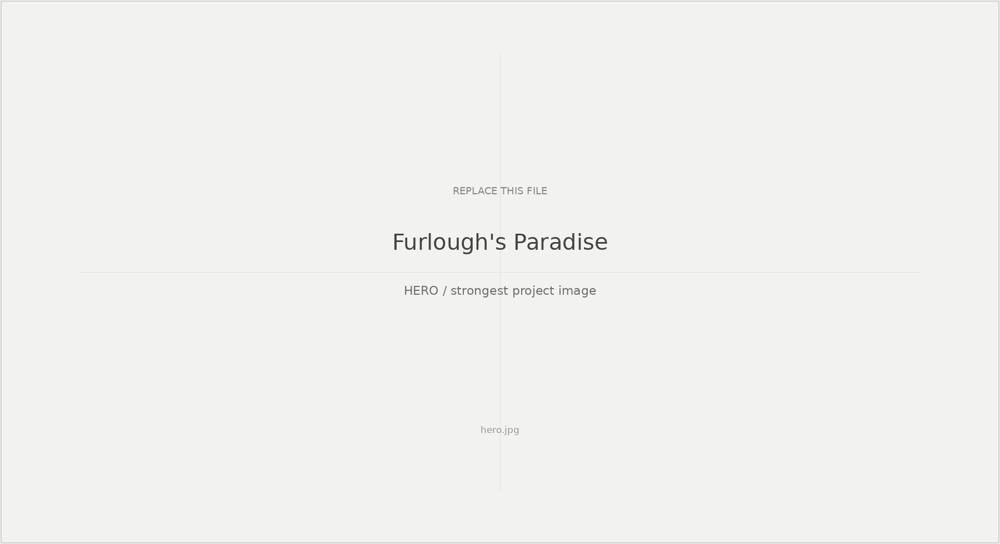
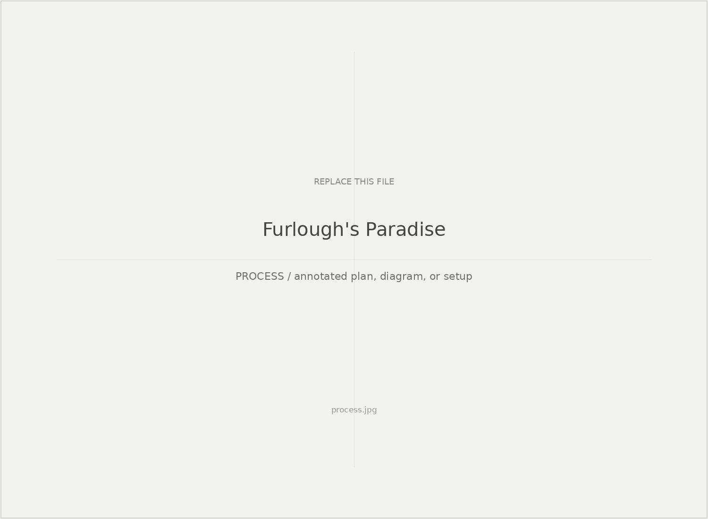
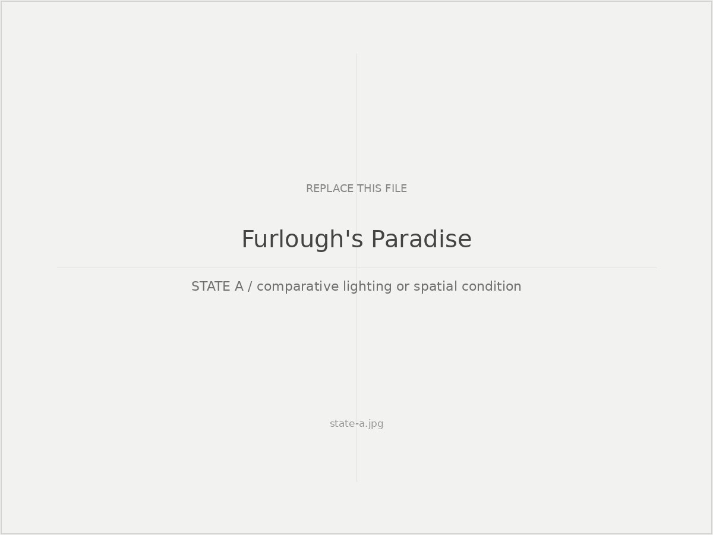
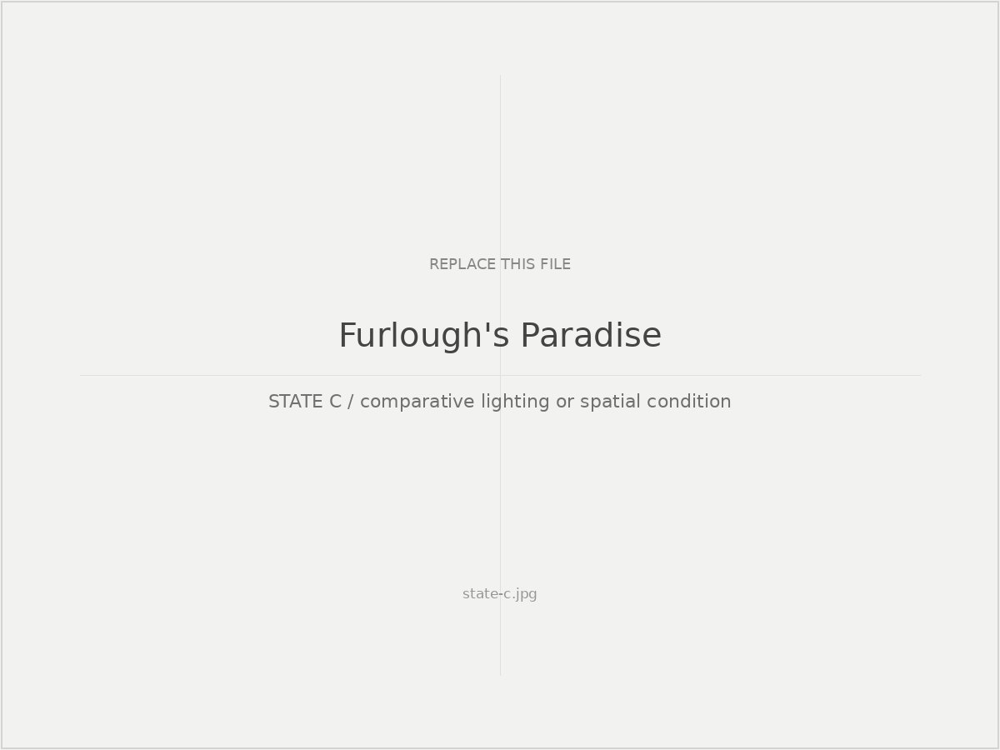
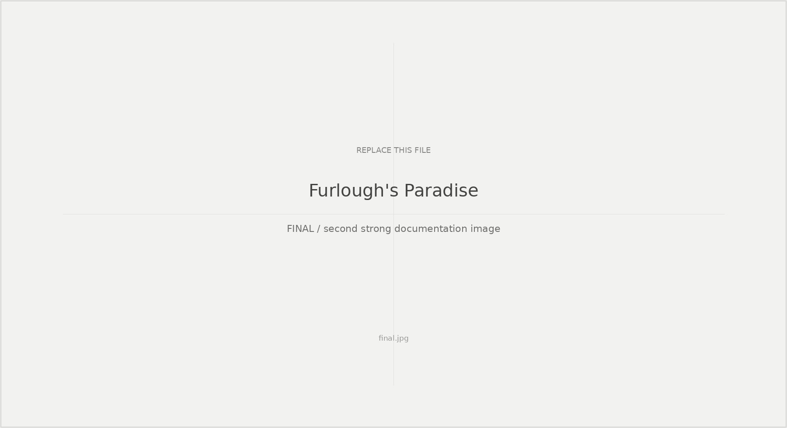

Study 03
Furlough's Paradise
How can shadow operate as spatial material rather than simply as an absence of light?

Study 01
Shadow geometry
Explain the spatial or system logic here. Use this section for a plan, annotated photograph, cue diagram, or other image that reveals how the project was constructed rather than only how it looked.

Study 02
Cue-state comparison
Show change over time or across conditions. Keep the framing consistent so the viewer can compare states rather than simply browse more photographs.

STATE A / condition
STATE B / condition

STATE C / condition
Reflection
What this changed
The process made shadow legible to me as a designed spatial relation among body, source, surface, and time.

Optional final documentation image or composite.